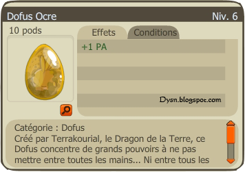

- Description : Créé par Terrakourial, le Dragon de la Terre, ce Dofus concentre de grands pouvoirs à ne pas mettre entre toutes les mains… Ni entre tous les pieds d’ailleurs.
- Niveau : 160
- Effets : 1 PA
- Effet passif : Octroie 1 PA supplémentaire si aucun dommage n'a été subi par le porteur depuis le tour de jeu précédent.
- Obtention : Récompense de la quête "l'Éternelle Moisson".